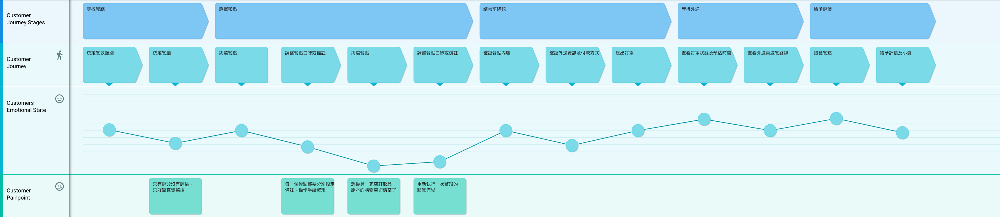

1. Uber Eeats UX Enhancement
此次�使用者經驗改善的主要策略為：清點使用者在訂餐時的主要任務並建立顧客旅程地圖，從而在不同任務時間點挖掘可能的痛點，並針對痛點進行設計概念的發想，最終提出產品原型以進行後續測試。
A. 顧客旅程地圖：
將訂餐時的流程拆解為「尋找餐廳」、「選擇餐點」、「結帳前確認」、「等待外送」、「給予評價」共 5 個情境。

將情境中發現的痛點加以分析，並研究競爭對手產品(foodpanda)是否存在同樣的問題。
A-1：「決定餐廳」只有評分沒有評論，只好靠直覺選擇
以使用者想吃鹽酥雞為例，同類型的餐廳有多個選擇，但 Uber Eats 僅提供了概略的星等分數，使用者只好憑藉直覺進行挑選。反之，foodpanda
提供了查看顧客評論的機制，藉此使用者在下單前可以先參考其他人的感想，進而判斷餐廳是否符合期待。
A-2：「調整餐點口味或備註」每一個餐點都要分別設定備註，操作手續繁瑣
在點餐時即便只是簡單的小配菜，也要跳進第二層選單，在點餐時一來一往的操作變得十分麻煩。反之，foodpanda 雖然也有第二層選單的設計，但可以發現 foodpanda
是有針對食物類型做進階設計的，當餐點不需要特殊設定時，可以直接在最外層選單點擊餐點名稱，將之快速加入購物車，重複點擊還能增加數量。
A-3：「挑選其他餐點」想從另一家店訂飲品，原本的購物車卻被清空了
Uber Eats 和 foodpanda
目前都僅能一次執行一筆訂單，且一筆訂單只限於同一家餐廳，然而在實際訂餐情況下，餐廳供應的餐點往往受到局限（例如，鹽酥雞店不會販賣飲料），既然兩大平台都是允許下多筆訂單的，為什麼不能在點餐時一起結帳，然後再由系統拆單分派給兩位送餐人員呢？
A-4：「再次調整餐點口味與備註」重新執行一次繁瑣的點餐流程
鑒於前面的購物車被清空了，只好透過 Uber Eats
再次進行一次繁瑣的點餐流程，如果沒辦法做到同時下訂單，或許系統可以提供一個暫存的空間，讓使用者保存餐點清單，甚至，更聰明一點，直接依照我的習慣及點擊紀錄為我組合一套推薦餐點？
B. 設計概念發想：
針對上面發現的 4 項痛點進行發想，並提出解決方式。
B-1：加入評論設計
提供各餐廳的評論頁面，幫助使用者在訂餐前判斷餐廳是否符合期待。
B-2：加入快速點餐設計
在不需要複雜口味或備註的品項提供快速點餐的功能，讓使用者更有效率的完成點餐流程。
B-3：加入自動分單設計
允許使用者跨餐廳點餐並一起結帳，由系統自動拆單分派給不同送餐人員。
B-4：加入清單暫存(或主動推薦餐點組合)設計
依照使用者的操作歷程、點餐紀錄等資訊，提供清單暫存或主動推薦餐點組合的功能。
2. QNAP Logo Redesign
Concept
雲端儲存早已成為主流趨勢，對中小型企業來說，購買雲平台更是是一個便捷且易於維護的方式。此 logo 的主要設計概念以 QNAP 的文字意象作為發想，結合 Cloud
的概念，最後透過顏色漸變的效果隱喻資料的高速流動，以最直觀的方式呈現 QNAP 對於雲端儲存產品的想像。